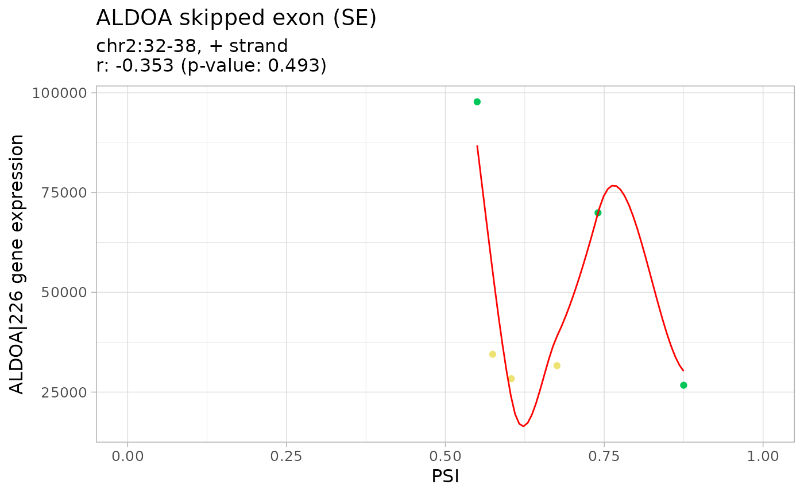

Plot, print and display as table the results of gene expression and alternative splicing
# S3 method for GEandAScorrelation
[(x, genes = NULL, ASevents = NULL)
# S3 method for GEandAScorrelation
plot(
x,
autoZoom = FALSE,
loessSmooth = TRUE,
loessFamily = c("gaussian", "symmetric"),
colour = "black",
alpha = 0.2,
size = 1.5,
loessColour = "red",
loessAlpha = 1,
loessWidth = 0.5,
fontSize = 12,
...,
colourGroups = NULL,
legend = FALSE,
showAllData = TRUE,
density = FALSE,
densityColour = "blue",
densityWidth = 0.5
)
# S3 method for GEandAScorrelation
print(x, ...)
# S3 method for GEandAScorrelation
as.table(x, pvalueAdjust = "BH", ...)
Arguments
| x |
|
|---|---|
| genes | Character: genes |
| ASevents | Character: AS events |
| autoZoom | Boolean: automatically set the range of PSI values based on
available data? If |
| loessSmooth | Boolean: plot a smooth curve computed by
|
| loessFamily | Character: if |
| colour | Character: points' colour |
| alpha | Numeric: points' alpha |
| size | Numeric: points' size |
| loessColour | Character: loess line's colour |
| loessAlpha | Numeric: loess line's opacity |
| loessWidth | Numeric: loess line's width |
| fontSize | Numeric: plot font size |
| ... | Arguments passed on to spansmoothness parameter for degreedegree of local polynomial used. evaluationnumber of points at which to evaluate the smooth curve. |
| colourGroups | List of characters: sample colouring by group |
| legend | Boolean: show legend for sample colouring? |
| showAllData | Boolean: show data outside selected groups as a single
group (coloured based on the |
| density | Boolean: contour plot of a density estimate |
| densityColour | Character: line colour of contours |
| densityWidth | Numeric: line width of contours |
| pvalueAdjust | Character: method used to adjust p-values (see Details) |
Value
Plots, summary tables or results of correlation analyses
Details
The following methods for p-value adjustment are supported by using the
respective string in the pvalueAdjust argument:
none: do not adjust p-valuesBH: Benjamini-Hochberg's method (false discovery rate)BY: Benjamini-Yekutieli's method (false discovery rate)bonferroni: Bonferroni correction (family-wise error rate)holm: Holm's method (family-wise error rate)hochberg: Hochberg's method (family-wise error rate)hommel: Hommel's method (family-wise error rate)
See also
Other functions to correlate gene expression and alternative splicing:
correlateGEandAS()
Other functions to correlate gene expression and alternative splicing:
correlateGEandAS()
Examples
annot <- readFile("ex_splicing_annotation.RDS") junctionQuant <- readFile("ex_junctionQuant.RDS") psi <- quantifySplicing(annot, junctionQuant, eventType=c("SE", "MXE"))#> | | 0% |======== | 20% |================ | 40% |======================== | 60% |================================ | 80% |========================================| 100% #> | | 0% |======== | 20% |================ | 40% |======================== | 60% |================================ | 80% |========================================| 100%geneExpr <- readFile("ex_gene_expression.RDS") corr <- correlateGEandAS(geneExpr, psi, "ALDOA") # Quick display of the correlation results per splicing event and gene print(corr)#> ================================================================================ #> SE_2_+_32_35_37_38_ALDOA splicing event #> ALDOA|226 gene expression #> #> Pearson's product-moment correlation #> #> data: exprNum and eventPSInum #> t = -0.7542, df = 4, p-value = 0.4927 #> alternative hypothesis: true correlation is not equal to 0 #> 95 percent confidence interval: #> -0.9051981 0.6427793 #> sample estimates: #> cor #> -0.3528456 #> #> ================================================================================ #> MXE_2_+_32_35_37_38_40_42_ALDOA splicing event #> ALDOA|226 gene expression #> #> Pearson's product-moment correlation #> #> data: exprNum and eventPSInum #> t = -0.26642, df = 4, p-value = 0.8031 #> alternative hypothesis: true correlation is not equal to 0 #> 95 percent confidence interval: #> -0.8522745 0.7610748 #> sample estimates: #> cor #> -0.1320457 #>#> Alternative splicing event Gene #> 1 SE 2 + 32 35 37 38 ALDOA ALDOA|226 #> 2 MXE 2 + 32 35 37 38 40 42 ALDOA ALDOA|226 #> Pearson's product-moment correlation p-value p-value (BH adjusted) #> 1 -0.3528456 0.4926962 0.8030827 #> 2 -0.1320457 0.8030827 0.8030827# Correlation analysis plots colourGroups <- list(Normal=paste("Normal", 1:3), Tumour=paste("Cancer", 1:3)) attr(colourGroups, "Colour") <- c(Normal="#00C65A", Tumour="#EEE273") plot(corr, colourGroups=colourGroups, alpha=1)#> $`SE_2_+_32_35_37_38_ALDOA` #> $`SE_2_+_32_35_37_38_ALDOA`$`ALDOA|226`#> #> #> $`MXE_2_+_32_35_37_38_40_42_ALDOA` #> $`MXE_2_+_32_35_37_38_40_42_ALDOA`$`ALDOA|226`#> #>